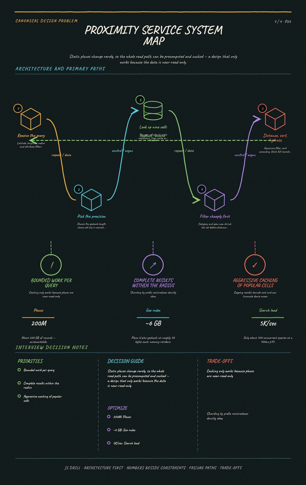

https://frosty110.github.io/js-drill/assets/system-design/infographics/design-problems/p24/architecture-overview.pngStatic places change rarely, so the whole read path can be precomputed and cached — a design that only works because the data is near-read-only.
Answer "what's near me?" over hundreds of millions of places at interactive latency. The signature challenge is that latitude and longitude are two dimensions and every index we have is one-dimensional, so the whole design is about flattening 2D space into a sortable key without losing locality.
All questions, model answers and diagrams for Design a Proximity Service →